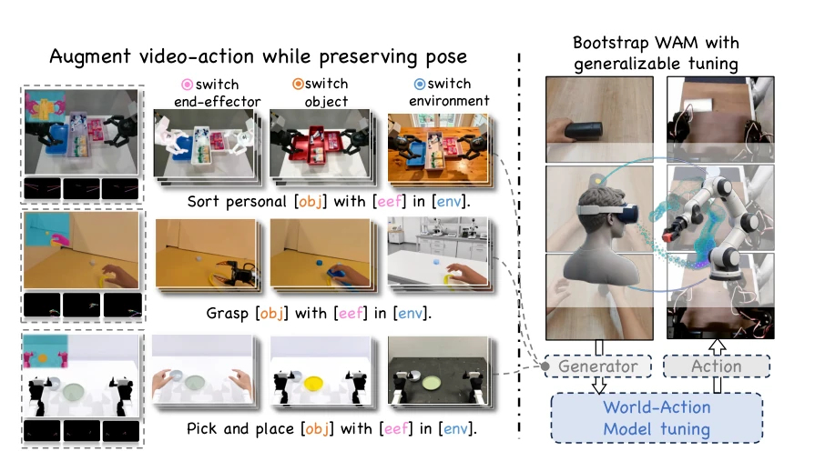
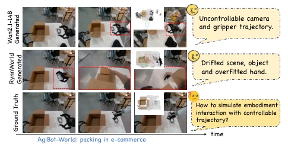
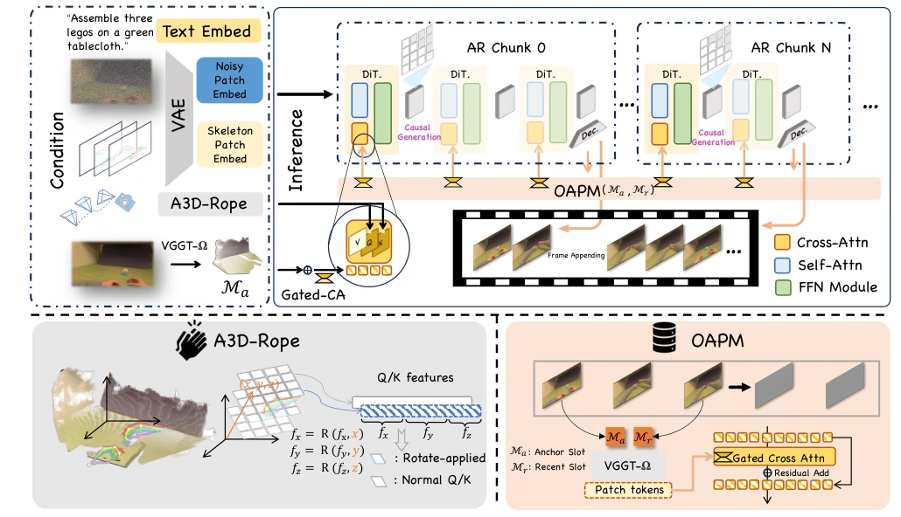
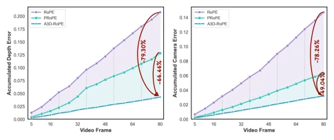
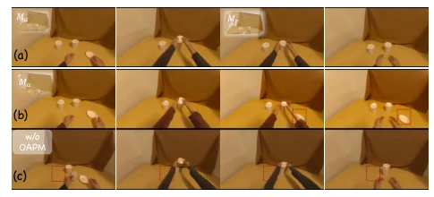
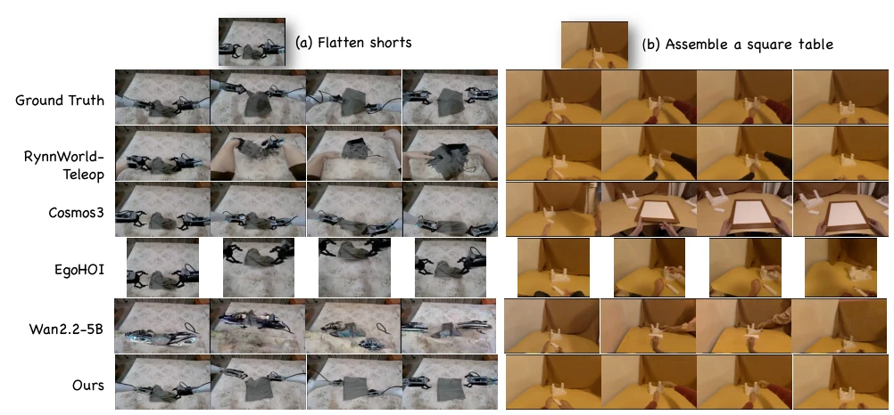
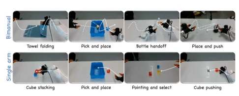
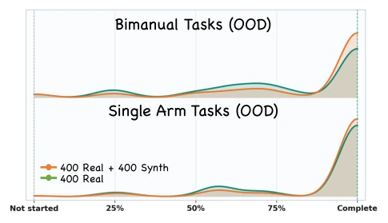
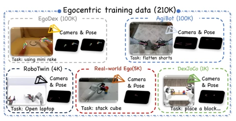
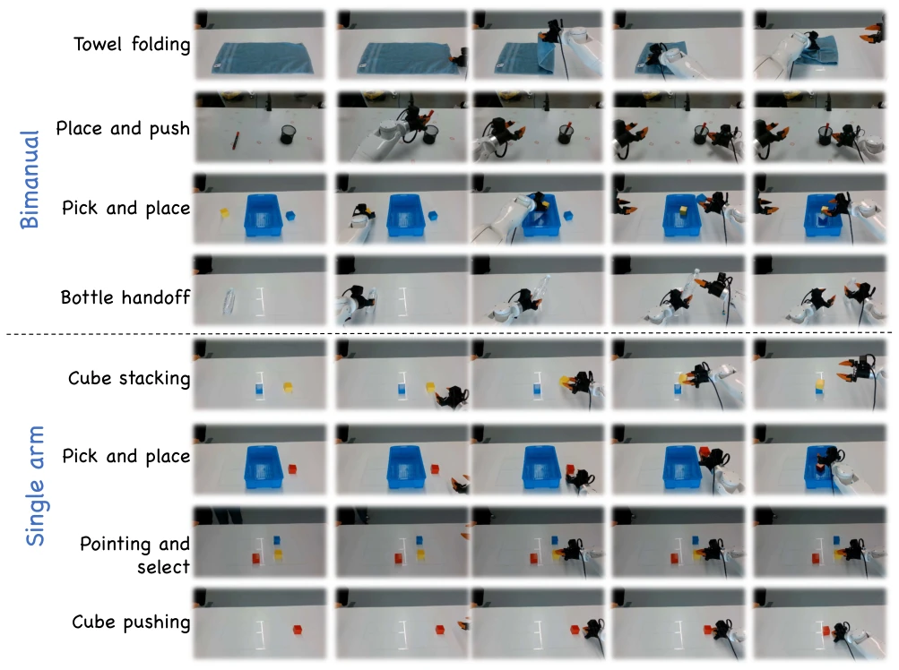

这篇论文给具身 AI 的“数据饥渴症”开了个特效药，但药方里全是现成的“预制菜”。EgoGenesis 本质是个带几何约束的视频生成器，用 OAPM 和 A3D-RoPE 强行把相机和机械臂的轨迹锁死，防止画面漂移。虽然下游任务成功率提升了，但核心还是依赖 Wan2.1 这种大模型底座，算不算真正的“世界模型”还得打个问号。不过对于搞数据增强的人来说，这工具确实能省点真机调试的功夫，毕竟真机器人摔坏了修起来比生成视频贵多了。它证明了高质量合成数据能弥补真实数据的不足，但在泛化性上是否过度依赖训练分布仍需观察，且生成过程计算成本不低。
This paper prescribes a special remedy for the "data hunger syndrome" of embodied AI, but the prescription consists entirely of ready-made "pre-made dishes". EgoGenesis is essentially a video generator with geometric constraints, forcibly locking the trajectories of the camera and robotic arm using OAPM and A3D-RoPE to prevent visual drift. Although downstream task success rates improved, the core still relies on large model foundations like Wan2.1, so whether it counts as a true "world model" remains questionable. However, for those engaged in data augmentation, this tool indeed saves some effort in physical robot debugging, after all, repairing a broken physical robot is much more expensive than generating videos. It proves that high-quality synthetic data can compensate for the lack of real data, but whether it overly relies on the training distribution in terms of generalization still needs observation, and the computational cost of the generation process is not low.
Embodied intelligence training requires massive amounts of egocentric video, but physical robot data collection is costly and dangerous. Existing generators like Wan2.1 [34] lack geometric constraints, leading to loss of control over camera and robotic arm trajectories; RynnWorld [47] although action-conditioned, suffers from scene and object drift. These problems lead to synthetic data being unusable for downstream training. How to simulate controllable interaction while maintaining scene stability is the core pain point. The lack of metric geometric information makes it difficult for existing models to guarantee physical consistency in long-sequence generation, limiting their application value in fine-tuning physical robot policies. Especially for operations requiring precise contact, existing methods often produce hallucinations or physical errors.

Figure 1. EGOGENESIS expands scarce real demonstrations with controllable egocentric videos that improve downstream WAM general- ization on real robots.

Figure 2. Motivation from diagnosing failures in existing egocen- tric video generators.
方法Method
基于块级 DiT 的自回归框架。输入包括文本、噪声视频、场景记忆和动作骨架。核心创新一：OAPM，维护不可变的初始帧 3D 锚点 Ma 和在线刷新的近期状态 Mb_r，通过门控交叉注意力读取，防止场景漂移。核心创新二：A3D-RoPE，将骨架/末端执行器的 3D 度量坐标编码为旋转相位，注入骨架到视频的交叉注意力中，确保动作几何与视频对齐。训练采用流匹配，分块生成并更新因果缓存。A3D-RoPE 仅在有效骨架区域应用旋转，背景保持不变。OAPM 通过定期刷新近期记忆来平衡稳定性与动态性。
An autoregressive framework based on block-level DiT. Inputs include text, noise video, scene memory, and action skeleton. Core Innovation 1: OAPM, maintains immutable initial frame 3D anchors Ma and online refreshed recent state Mb_r, read via gated cross-attention to prevent scene drift. Core Innovation 2: A3D-RoPE, encodes skeleton/End-Effector 3D metric coordinates as rotation phases, injects into skeleton-to-video cross-attention to ensure action geometry aligns with video. Training adopts flow matching, generating in blocks and updating causal cache. A3D-RoPE applies rotation only in valid skeleton areas, background remains unchanged. OAPM balances stability and dynamics by periodically refreshing recent memory.

Figure 3. EGOGENESIS architecture. Text, noisy video, and skeleton embeddings provide the conditioning inputs. Autoregressive DiT generates and appends video frames. OAPM maintains anchored and recent 3D scene slots and refreshes the recent state online. A3D- RoPE injects metric action geometry into skeleton-to-video cross-attention.

Figure 5. Accumulated depth and camera errors over an 80-frame rollout; A3D-RoPE consistently reduces geometric drift.

Figure 7. OAPM preserves persistent scene content and updates the current interaction state periodically.
Uses a 210K mixed dataset (EgoDex [17], AgiBot [1], etc.). Baselines include Wan2.1 [34], Cosmos3 [28], EgoHOI [21], etc. Metrics cover PSNR, Kpt.Err, physical consistency. Downstream tested on Tianji M6 robot, single-arm OOD success rate rose from 77% to 84%, dual-arm from 53% to 70%. Ablation experiments prove OAPM and A3D-RoPE are both effective, A3D-RoPE significantly reduces geometric drift. Tasks include folding towels, stacking blocks, etc., validating cross-embodied morphology generalization capability. Data augmentation significantly improved strategy performance on unseen scenes.

Figure 4. Qualitative comparison on flattening shorts and assembling a square table; EGOGENESIS better preserves embodiment, scene layout, and contact-driven object evolution.

Figure 8. Eight real-robot tasks used to evaluate downstream WAM generalization.

Figure 9. OOD task progress with and without EGOGENESIS- generated training data.

Figure 10. Composition of the 210K-clip egocentric training cor- pus. Every source is converted to a unified camera-and-pose con- ditioning interface.

Figure 11. Detailed execution sequences for four bimanual and four single-arm real-robot tasks. Five checkpoints per row show the pro- gression from the initial configuration to the task-specific success state.